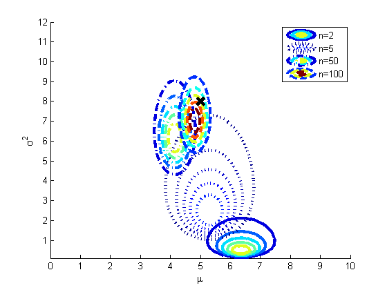
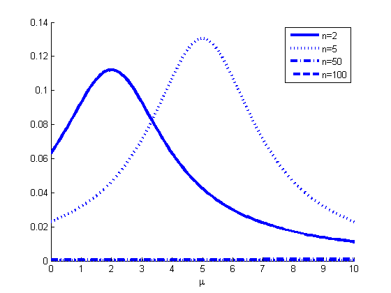
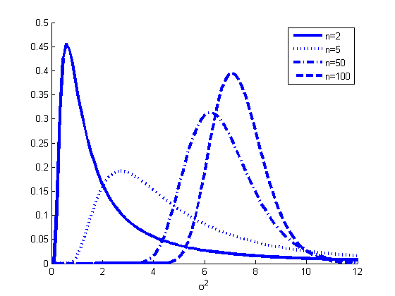

Plot p(mu, sigma^2 | D) in 2d using an uninformative prior for different n
function gaussInferMuSigmaDemo()
setSeed(1);
muTrue = 5; varTrue = 8;
X = randn(500,1)*sqrt(varTrue) + muTrue;
muRange = [0 10]; sigma2Range = [0.1 12];
npts = 100;
mus = linspace(muRange(1), muRange(2), npts);
sigma2s = linspace(sigma2Range(1), sigma2Range(2), npts);
[X1,X2] = meshgrid(mus',sigma2s');
grid = [X1(:) X2(:)];
[nr] = size(X1,1); nc = size(X2,1);
[styles, colors, symbols] = plotColors();
ns = [2 5 50 100];
h = zeros(1,length(ns));
ps = cell(1,length(ns));
legendstr = cell(1,length(ns));
fig1 = figure; hold on;
fig2 = figure; hold on;
fig3 = figure; hold on;
for i=1:length(ns)
n = ns(i);
x = X(1:n);
mn = mean(x);
kn = n;
an = n/2;
bn = 0.5*sum((x-mn).^2);
figure(fig1);
logp = GIGlogpdf(grid(:,1), grid(:,2), mn, kn, an, bn);
p = reshape(exp(logp), nr, nc);
[c,h] = contour(X1, X2, p, 5, styles{i}, 'linewidth' , 3);
legendstr{i} = sprintf('n=%d', n);
figure(fig2);
model.mu = 2*an;
model.Sigma = mn;
model.dof = bn/(an*kn);
logp = studentLogprob(model, mus);
plot(mus, exp(logp), styles{i}, 'linewidth', 3);
figure(fig3);
logp = IGlogpdf(sigma2s, an, bn);
plot(sigma2s, exp(logp), styles{i}, 'linewidth', 3);
end
figure(fig1);
legend(legendstr);
xlabel(sprintf('%s', '\mu'))
ylabel(sprintf('%s', '\sigma^2'))
plot(muTrue, varTrue, 'x', 'markersize', 12, 'linewidth', 4, 'color', 'k');
printPmtkFigure('muSigmaPost')
figure(fig2);
legend(legendstr);
xlabel(sprintf('%s', '\mu'))
printPmtkFigure('muPost')
figure(fig3);
legend(legendstr);
xlabel(sprintf('%s', '\sigma^2'))
printPmtkFigure('sigmaPost')
end
function logp=GIGlogpdf(mu,s2,m,k,a,b)
logZ = 0.5*log(2*pi) -0.5*log(k) + gammaln(a) - a*log(b);
logp = -(a+1.5).*log(s2) - (2*b + k*(m-mu).^2)./(2*s2);
logp = logp - logZ;
end
function logp = IGlogpdf(x, a, b)
logp = a*log(b)-gammaln(a) -(a+1).*log(x) -b./x;
end
  